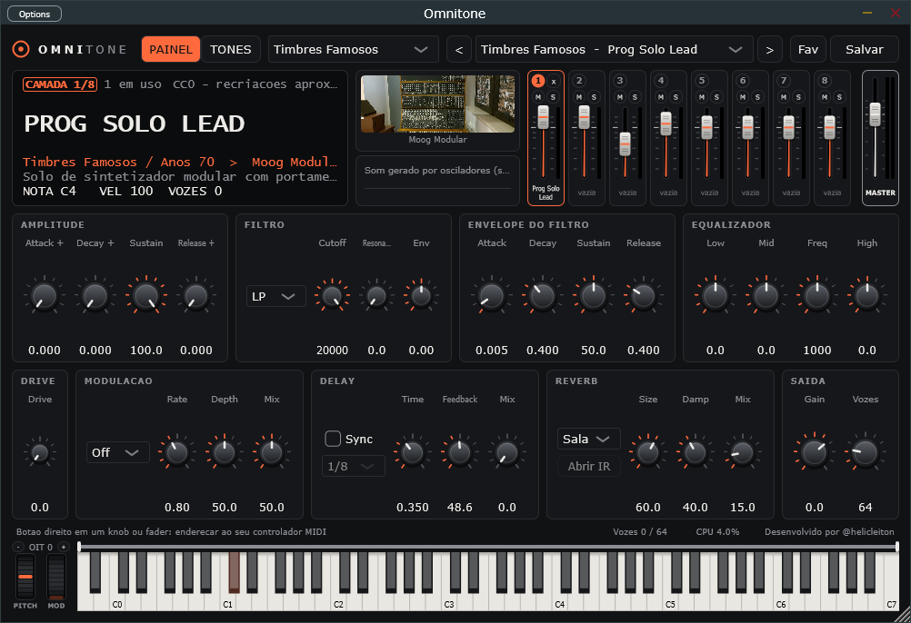

O Omnitone e um sampler e sintetizador gratuito para Windows. Empilhe ate 8 timbres, divida o teclado, toque sintese FM, orgao de tonewheels e sintetizadores analogicos virtuais, e carregue suas bibliotecas SFZ e SoundFont.
Versao 0.3.0 · 8 MB · Windows 10 e 11 de 64 bits · aplicativo e plugin VST3 · gratuito, hoje e sempre

Deixe seu e-mail para ser avisado de novas versoes e de novos timbres. O Omnitone e gratuito e sempre sera.
E-mail cadastrado. Obrigado!
Seu contato e usado so para avisos sobre o Omnitone.
Cada camada tem volume, mute, solo, VU, faixa de teclas e oitava. Monte um baixo na mao esquerda e um piano na direita, ou empilhe pads.
Amostras em SFZ, SoundFont (.sf2), sintese FM de 6 operadores, orgao de tonewheels por modelo e sintetizador analogico virtual.
Envelope, filtro multimodo com envelope proprio, equalizador de 3 bandas, drive e modulacao (chorus, phaser, tremolo, caixa rotativa) em cada camada.
Delay sincronizado ao andamento ou livre, reverb algoritmico ou por convolucao com a sua resposta ao impulso, e limitador na saida.
Salve os ajustes de cada timbre e as combinacoes inteiras de camadas. O app ja traz 12 Performances prontas. Marque favoritos, encontre tudo pela busca (Ctrl+F) e ouca cada timbre antes de carregar.
Controladores MIDI funcionam ao conectar. Enderece knobs e faders do seu teclado com um clique. Rodas de pitch bend e modulacao.
Usa os modos de baixa latencia e exclusivo do Windows Audio, sem instalar driver nenhum.
Os timbres sao organizados como em um teclado, por familia de instrumento (Piano, Orgao, Cordas, Synth Lead...), e tambem pelo teclado em que se inspiram.
| O que | Como chega | Detalhes |
|---|---|---|
| Timbres de fabrica | Ja vem no app | Mais de 140 timbres gerados por sintese, sem amostras: sintetizadores analogicos virtuais, orgao de tonewheels com 10 registros, vozes FM, kits de bateria eletronica, leads, baixos, pads e efeitos. Mais 12 Performances prontas, com splits e camadas. |
| Bibliotecas SFZ | Voce instala | Qualquer instrumento em SFZ: pianos, orquestra, baterias, guitarras. Ha varias bibliotecas livres, como VCSL, VSCO 2 e Salamander Grand Piano. |
| SoundFonts | Voce instala | Arquivos .sf2: cada preset vira um timbre, classificado pela familia do General MIDI. |
| Bancos FM | Voce instala | Bancos .syx de 32 vozes no formato DX7 e colecoes de vozes de 4 operadores no formato Reface DX. |
O Omnitone nao distribui bibliotecas de amostras, SoundFonts, bancos de vozes nem fotos de terceiros. Cada um tem a sua licenca.
Quatro musicas curtas feitas so com timbres que ja vem no Omnitone. Cada faixa e um timbre: toque a musica e use M (mudo) e S (solo) para ouvir cada um separado.
As demos sao composicoes originais, tocadas e mixadas pelo proprio Omnitone, sem amostras nem efeitos de fora.
Omnitone-Setup.exe vai para a sua pasta de Downloads.Prefere nao instalar? Baixe a versao portatil (zip), descompacte e abra Omnitone.exe. Para remover a versao instalada, use "Adicionar ou remover programas" do Windows; seus timbres e ajustes em Documentos\Omnitone sao mantidos.
O Omnitone e um projeto gratuito e nao tem assinatura digital paga. Por isso o Windows pode mostrar a tela azul "O Windows protegeu o computador" (SmartScreen) na primeira vez.
Isso pode aparecer ao abrir o instalador. Para continuar: clique em Mais informacoes e depois em Executar assim mesmo.
.sf2 e .syx para a sua pasta de bibliotecas.Documentos\Omnitone\Libraries e reabra o app.Documentos\Omnitone\User\Images, com o nome do timbre ou da origem.O Omnitone esta nas primeiras versoes e foi desenvolvido e verificado em um unico computador, entao pode haver falhas em outras maquinas e configuracoes de audio. Se algo nao funcionar, conte o que aconteceu: cada relato ajuda a corrigir.
O botao abre o WhatsApp com o relato ja escrito; e so enviar. Se preferir, tambem da para abrir um relato no GitHub.
O Omnitone e gratuito e sempre sera. Usa JUCE, sfizz, o nucleo FM do music-synthesizer-for-android, TinySoundFont e o VST 3 SDK da Steinberg.
Os nomes de instrumentos e fabricantes citados no app e nesta pagina pertencem aos seus donos e servem apenas para indicar o tipo de som em que um timbre se inspira. O Omnitone nao e afiliado nem endossado por nenhuma dessas empresas. Este projeto nao tem relacao com a biblioteca de audio espacial "Omnitone" do Google. VST e uma marca da Steinberg Media Technologies GmbH.